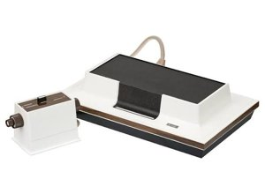
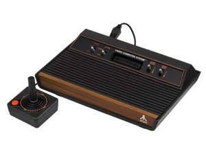
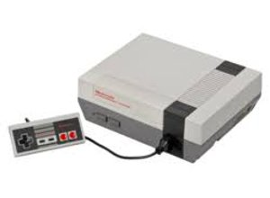
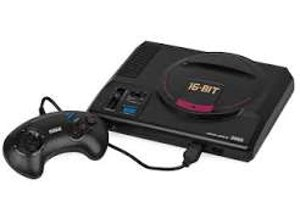
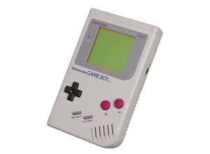
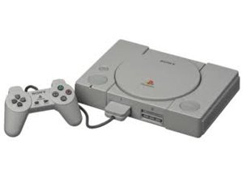
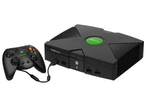
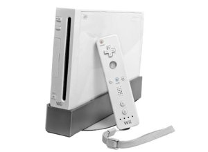

Early Gaming Consoles
This page shows video game consoles that helped shape home gaming over time.








Early systems that helped bring games into homes.
This page shows video game consoles that helped shape home gaming over time.







